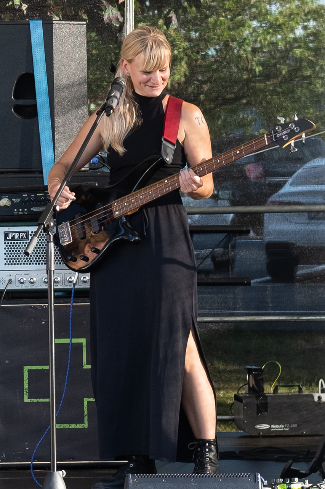
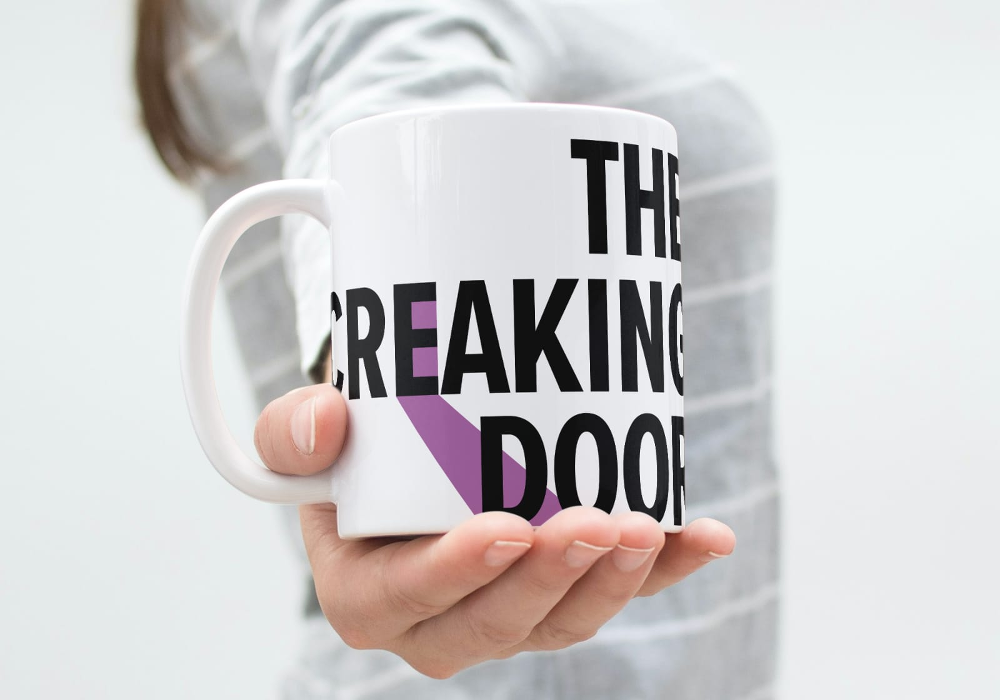

Du?
Leadgesang – gesucht!
Seit April 2026 ist unser Mikro verwaist. Du kannst singen, hast Bock auf harten Pop-Rock und einen Proberaum mit Kühlschrank? Dann meld dich unten über das Kontaktformular!
harter Pop-Rock · alle Songs selbst geschrieben
Bonn-Beuel · seit 2021
alle Songs selbst geschrieben – Debütalbum in Arbeit
Leadgesang – gesucht!
Seit April 2026 ist unser Mikro verwaist. Du kannst singen, hast Bock auf harten Pop-Rock und einen Proberaum mit Kühlschrank? Dann meld dich unten über das Kontaktformular!
Gitarre
Gründungsmitglied, kennt Jan seit der Grundschule. Fährt das Bandmobil, malt die Bilder für unser Merch – und liefert die Riffs, die unsere Songs tragen.

Bass & Backing Vocals
Musikalisch seit Kindertagen, Kopf hinter einem Großteil der Songs. Als Dr. Psych sorgt sie für den Tiefgang in den Texten – Backing Vocals inklusive.
Drums
Takt- und Ideengeber, Mit-Initiator der Band. Wollte es mit Grischa musikalisch noch mal versuchen – nachdem Anlauf eins in Kindheitstagen grandios gescheitert war.
Auf Jans Bestreben hin unternahmen er, Susi und Grischa 2021 erste musikalische Gehversuche – mit ihrem bis dato einzigen Song „Follow“. Susi musste sich entscheiden: Bass oder Leadgesang. Also suchten die Drei Verstärkung – und fanden Jojo. Aus Drei wurden Vier, und The Creaking Door war geboren.
Der Name? Wie könnte es anders sein: die immerzu quietschende Tür unseres ersten Proberaums – ein stundenweise mietbarer Gemeinschaftsraum. Viel Fahrerei in Grischas altem Volvo, Equipment pro Probe auf- und wieder abbauen. Nicht gerade die besten Voraussetzungen für wöchentliche Sessions.
Das Einzige, was wir mitgenommen haben: eine 20-sekündige Aufnahme des markanten Knarrzens, mit dem uns die Tür jedes Mal begrüßt hat. Sie liegt hier rechts auf dem Regal – drück ruhig auf Play.
Heute teilen wir uns einen voll ausgestatteten Proberaum (inkl. Kühlschrank!) in Bonn-Beuel mit einer befreundeten Band. Von hier aus erobern wir Stück für Stück mehr Bühnen – und arbeiten an unserem Debütalbum.
The Creaking Door · Live
na ja … fast. Helft uns, das Plakat zu füllen!
Harter Pop-Rock · direkt aus dem Proberaum Bonn-Beuel
Jojo hat die Band verlassen – danke für alles! Das Mikro ist frei: Wer Lust hat, unsere neue Leadstimme zu werden, meldet sich über das Kontaktformular.
Alle Songs selbst geschrieben – wir freuen uns, euch bald unser erstes Album präsentieren zu können. Bleibt dran!
Wir arbeiten daran, mehr Bühnen zu erobern. Termine kündigen wir auf Instagram und TikTok an – folgt uns!
Unterstützt uns auf Patreon, sichert euch Merch und exklusive Einblicke in den Proberaum.
↑ Platzhalter durch eure Fotos ersetzen – mehr auf Instagram

Bier kalt stellen!
+ Merch auf Patreon checken →
Shirts, Kunst und exklusive Einblicke: Auf Patreon findet ihr unseren Merch und könnt uns direkt auf dem Weg zum Debütalbum unterstützen. Jeder Euro fließt in Proberaum, Aufnahmen und die nächsten Gigs.
Zu PatreonFragen zu unserer Musik? Ihr wollt uns für ein Event buchen oder einfach Hallo sagen? Tragt euch ein, bevor ihr geht – wir melden uns so schnell wie möglich.